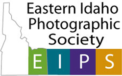

PLEASE IGNORE ALL RED UNDERLINED TEXT IT IS ADS NOT AUTHORIZED
BY EASTERN IDAHO PHOTOGRAPHIC SOCIETY

This is Idaho Falls in August 21, 2017.
The Eastern Idaho Photographic Society, Idaho Falls, Idaho is a photography club for amateur and professional photographers.
Educational presentations and positive critique of photographer's images are the formats of the club's bi-monthly meetings on the
first and third Thursday of the month at 7:30 P. M.
The first meeting of month for Eastern Idaho Photographic Society will be a series of workshops.
We are going to meet at the Good Samaritan at 7:30 P.M.Map to location
Bring your camera and tripod to meeting.
We will leave from there promptly at 7:45 to photograph at various locations.
The plan is carpool if participants wish.
The goal is to improve our skills as photographers and get some images to satisfy advancement topic requirements.
Workshop topics
Direction to Good Samaritan Society-Idaho Falls Village
The Eastern Idaho Photographic Society, Idaho Falls, Idaho is a photography club for amateur and professional photographers.
Educational presentations and positive critique of photographer's images are the formats of the club's bi-monthly meetings on the
first and third Thursday of the month at 7:30 P. M. Meeting info
EIPS members photograph wildlife, landscapes, and still life's. Our favorite location for landscapes is the national lands around Idaho Falls.
Wildlife are photographed in Yellowstone Park.
The December 2010 issue of Outdoor Photographer had the top 25 places in the world to photograph landscapes.
Five of the locations are an average of 6 hours and 375 miles from Idaho Falls.
The closest is 3 hours and 149 miles and the farthest is 10 hours and 603 miles
The June issue of Outdoor Photographer's contest photographing 100 landscapes in the world.
We have 3 with in 200 miles of Idaho falls.
National Parks| Monument and Reserve| Bureau of Land Management| National Forests| Near By Ghost Towns| Near By Wildlife Refuges| Weather| Sunrise/Sunset Times| Photographers/Photo Clubs
 |
|
Photographs Copyright© Photographer, Owner, or Eastern Idaho Photographic Society. Photographs
may not be reproduced in any manner without written permission.
Web Page Copyright© 2011 Eastern Idaho Photographic Society

© Michael Fryer